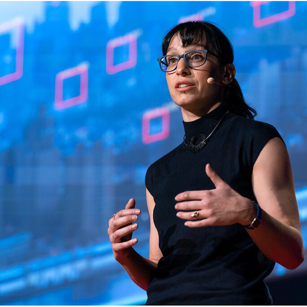
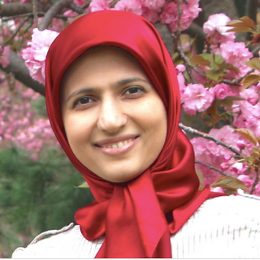
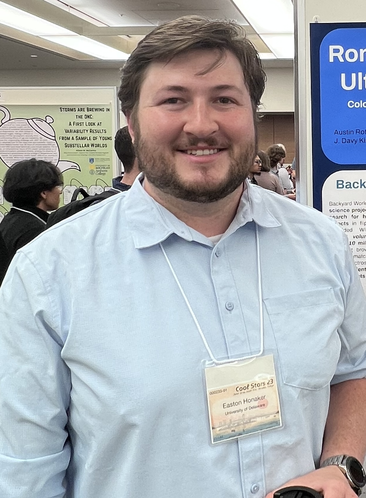
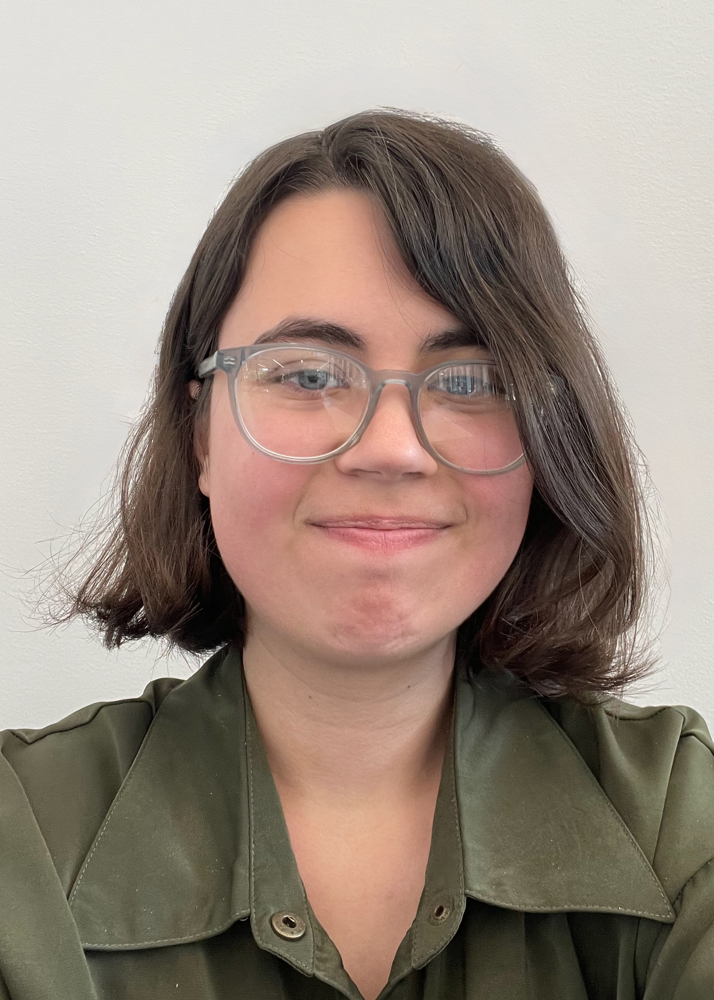
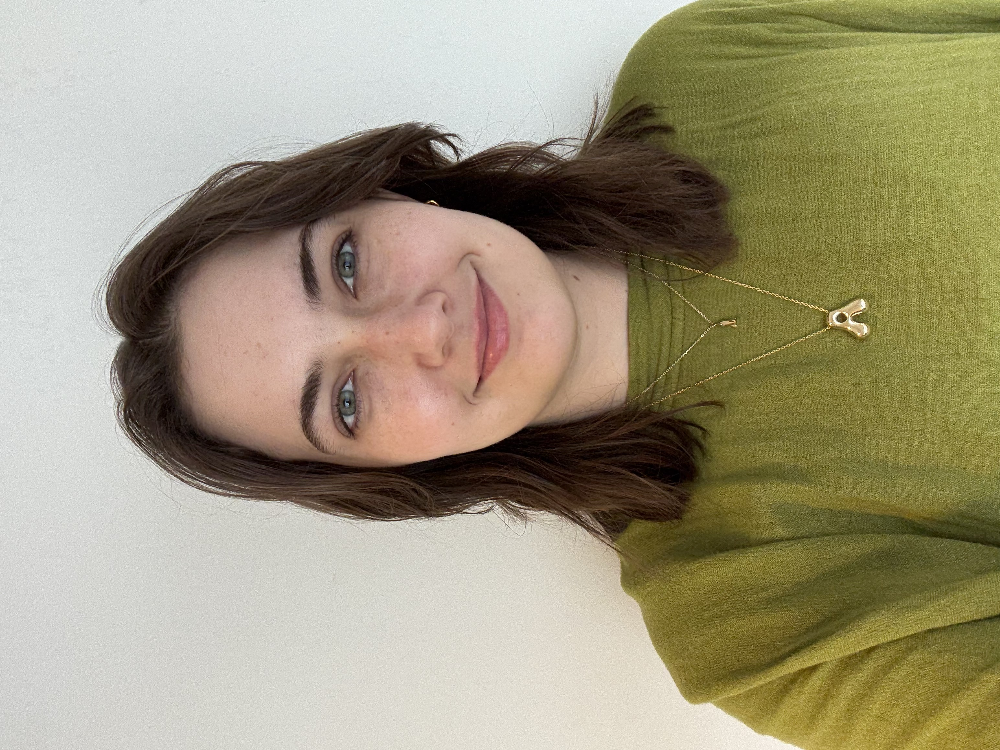
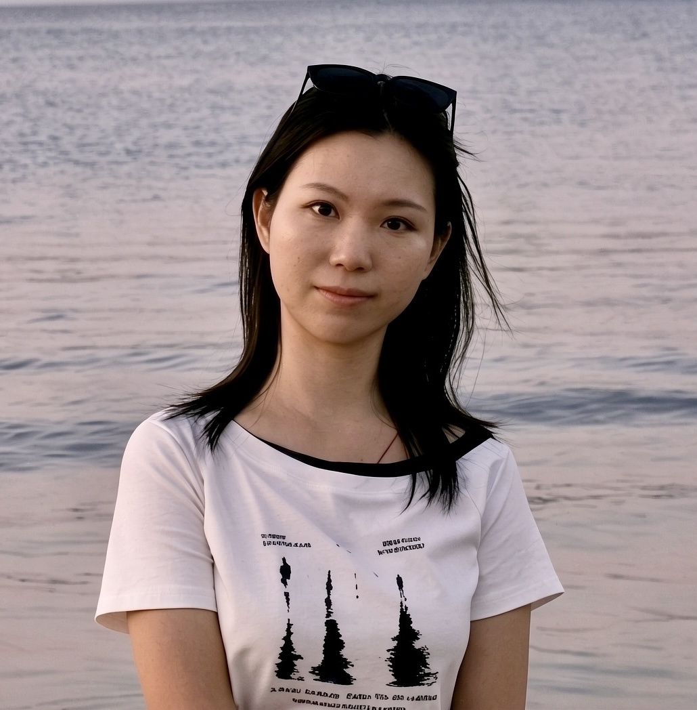
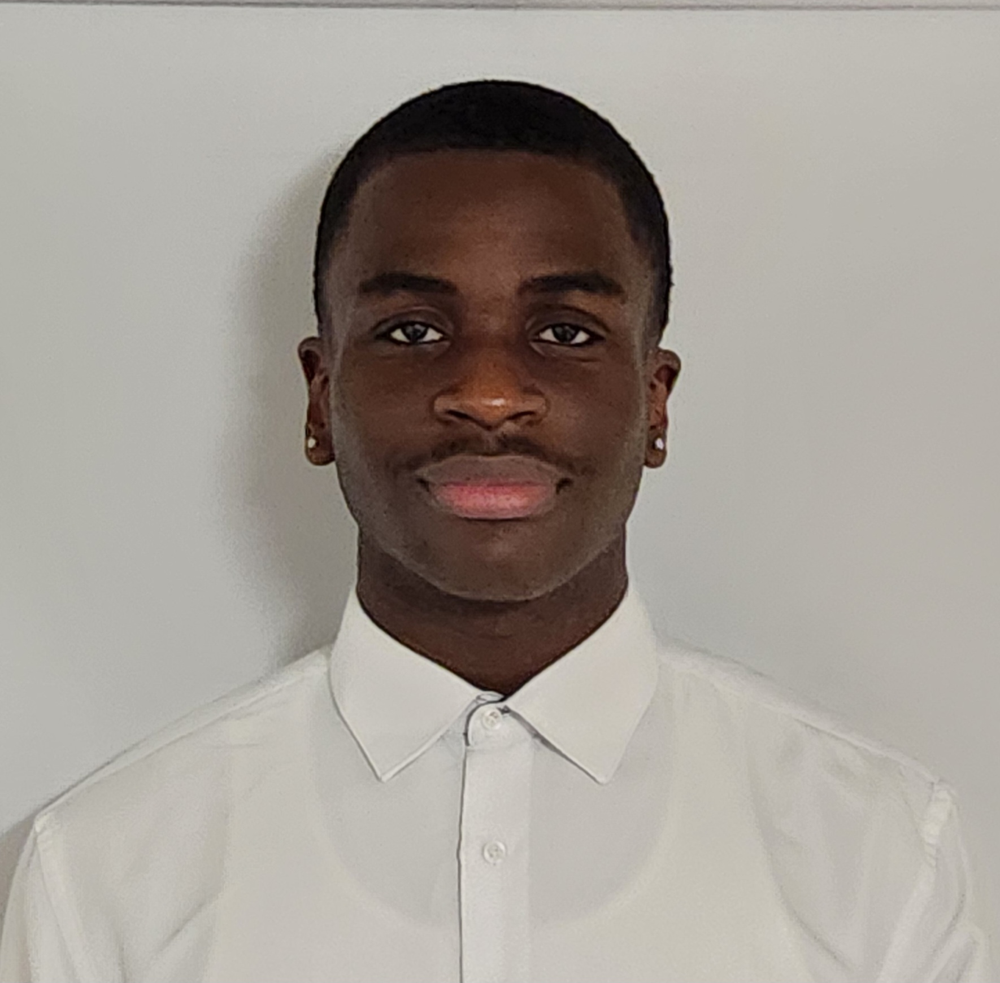
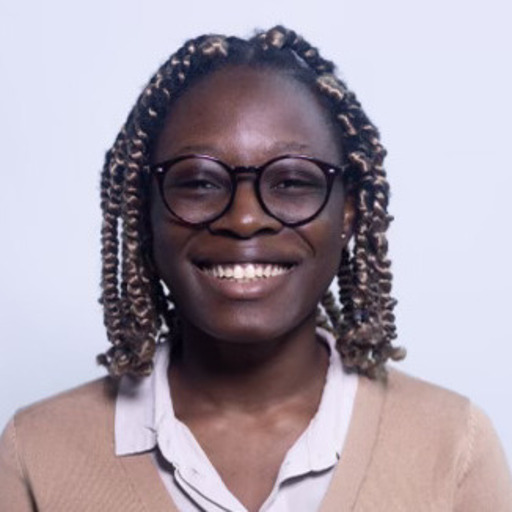

Time Domain Astronomy
Our research focuses on explosive transients in the sky, particularly supernovae and their progenitor systems. We develop methods to analyze large datasets from time-domain surveys.
Our research focuses on explosive transients in the sky, particularly supernovae and their progenitor systems. We develop methods to analyze large datasets from time-domain surveys.
We apply data science methods to urban problems, working on projects ranging from criminal justice to public health and transportation.

Stirring this boat in all directions. Astrophysicist, Data Scientist.

PostDoc
Somayeh works on generating templates for stripped-envelope supernovae using Gaussian Processes.
She is an expert in microlensing and machine learning. She enjoys reading and traveling.
Graduated Student
Now an LSST Catalyst PostDoctoral Fellow at JHU, Xiaolong works on light echoes, building AI platform for the discovery of AI in LSST, and evaluating the performance of LSST's observing strategy.

Graduated Student
Now a PostDoc at the University of Singapore, Riley works on stellar flare and time-domain data processing and detrending with Principal Component Analysis.
He grew up in Fairbanks, AK and likes biking, hiking, skiing, playing music (trumpet & guitar), and cooking. He also enjoys nerd stuff like video games, anime & manga, science fiction/fantasy, and tabletop role-playing games.

Graduated Student
Willow works on modeling stripped envelope supernova light curves.
She enjoys playing the guitar with mediocrity, is a beginner pointillism artist, has a small fountain pen and ink collection, and is an amateur lock picker.

PhD Candidate
Tatiana works on CNN models to classify transients and discover new Astrophysical Objects.
She is a Colombian physicist that loves animals a lot and because she loves them she doesn't eat them. She is on the way to being a scientist.
PhD Candidate
Sid studies transients and their diversity using data-driven methods for probabilistic modelling, classification and anomaly detection, and finding representations to capture the physics of spectra.

PhD Candidate
Shar is applying neural networks to continuous readout astronomical images, where one of the spatial axes tracks time, to explore the subsecond astrophysical domain and evaluating the performance of LSST's observing strategy for fast transients.

PhD Candidate
Easton studies brown dwarfs in the Solar Neighborhood using large surveys like LSST, Roman, Euclid, and SphereX. He is particularly interested in their luminosity function and kinematics as probes of the Milky Way's structure and evolution.
Easton referees water polo and you can sometimes catch him officiating NCAA games on ESPN!

PhD Candidate
Mathilda works on identifying anomalous astronomical phenomena using the color vs. magnitude-change phase space.

PhD Candidate
Ally works on classifying supernovas and other transients low-resolution spectra using machine learning.
She spends her free time crocheting, cooking, snowboarding, or hiking with her cat.

Researcher Intern
She uses deep learning methods such as Deformable DETR and U-Net to detect and segment light echoes in astronomical images.
Just obtained a bachelor in finance at University of Delaware China campus, about to start a bachelor in Physics at the University of Munich, German. She loves cats and dogs, traveling, and discovering good food in new places. She is curious about science and the world around her, and is slowly finding her way toward becoming a scientist.

Research Intern
Senior at Delaware State University, NASA Space Science fellow, works on information theory applications to autoencoder neural networks.

Research Intern
Senior at Lincoln University, works on information encoding of sparse multivariate time series with AI as part of the DEMAD Science Data Science Corps program.

Undergraduate Researcher
Adeoluwa applied a pretrained machine learning model and developed an autoencoder to reconstruct and analyze multi-band astronomical light curves using Python.
He is originally from Nigeria and loves ping pong, Soccer and watching basketball. He aspires to become a Machine learning Engineer

Graduated from Lincoln University with a Computer Science Bachelor in 2026, now a full time back end developer in her native Uruguay, works on information encoding of sparse multivariate time series with AI as part of the DEMAD Science Data Science Corps program

Now a Ph.D. Candidate at Victoria University of Wellington, NZ, specializing on large language models